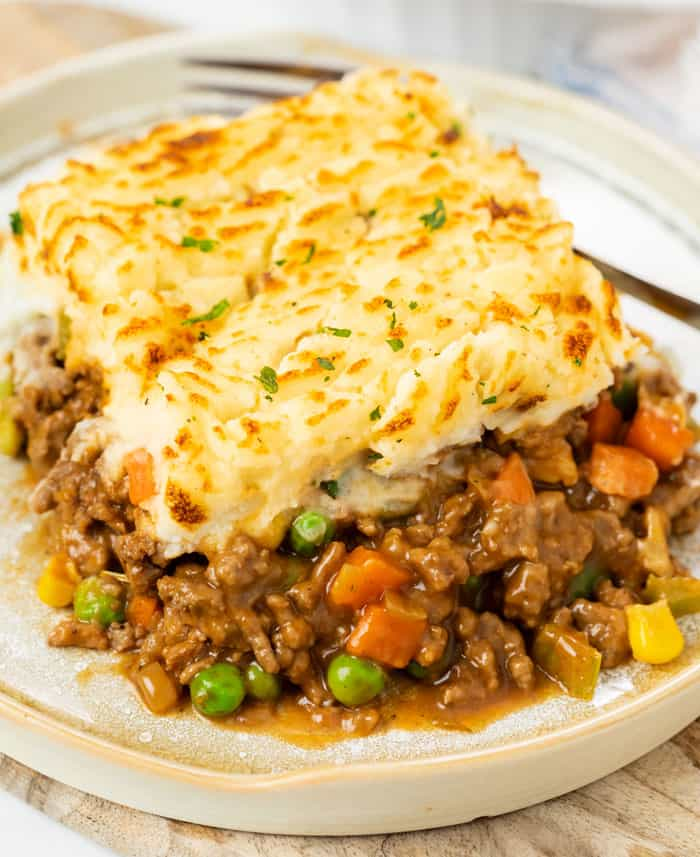

Shepherd's pie
This Easy Sheperd's Pie recipe has a delicious ground beef filling with gravy and frozen vegetables. Prepare it on the Stove Top in less than 30 minutes, then broil for 5. This is a perfect shortcut dinner for busy weeknights and a great way to use up leftover mashed potatoes.
Ingredients
- 1 tbsp olive oil
- 3/4 cup yellow onion, finely diced
- 1 rib celery, finely diced
- 2 cloves garlic, minced
- 1 lb. ground beef, 85% lean
- 2 tbsp flour
- 1 tbsp tomato paste
- 1/2 tsp dried thyme
- 1/2 cup chicken broth
- 1 cup brown gravy
- 1 cup frozen mixed vegetables
- 3 cups mashed potatoes
- Salt and pepper, as needed
How-to
Prepare the potatoes
- This homemade mashed potato recipe is perfect for this recipe, you’ll make a half batch to end up with 3 cups. While the potatoes boil, prepare the filling.
Prepare the filling
- Preheat oil in a large pan over medium-high heat. Add the diced onions and celery. Saute for 3 minutes. Add the garlic and cook for 1 minute.
- Increase heat to high. Add the ground beef. Cook and crumbled until cooked through. Drain all excess grease.
- Reduce heat to medium-high. Sprinkle in the flour and toss to coat. Add the Tomato Paste and thyme. Cook for 1-2 minutes.
- Deglaze the pan with the Chicken broth. Use a silicone spatula to scrape up any brown bits from the pan, this adds flavor to the filling.
- Add HALF of the brown gravy. Stir in the vegetables until heated through.
- Season with salt/pepper and add more gravy if desired. Taste and adjust seasoning as needed. Remove from heat.
Assemble
- Transfer to a lightly greased 9-inch pie pan or 7 x 11 casserole dish. Carefully spread warm mashed potatoes on top.
- Use a fork to “rake” lines into the mashed potatoes.
Broil
Set the oven rack about 5 inches away from the broiler. Set to a high broil, 550 degrees.
- Broil for about 5 minutes watch it after 2 minutes, it will go from perfectly browned to burned quickly.
- Remove from heat and serve.
Original recipe